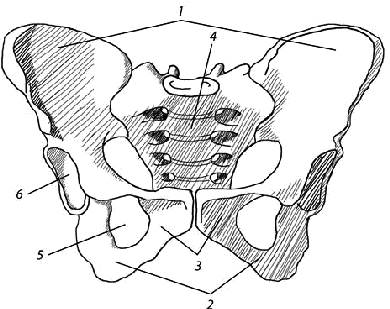

Глава 7. Пояс нижней конечности. Тазовый пояс
Тазовая кость, os coxae, относится к плоским костям и выполняет функцию движения (участие в сочленениях с крестцом и бедром), защиты (органов таза) и опоры (перенесение тяжести всей вышележащей части тела на нижние конечности).
Последняя функция преобладает, что и определяет сложное строение тазовой кости и слияние ее из трех отдельных костей – подвздошной, os ilium, лобковой, os pubis, и седалищной, os ischii. Сращение этих костей происходит в области наибольшей нагрузки, а именно в области вертлужной впадины, являющейся суставной ямкой тазобедренного сустава, в котором и происходит сочленение пояса нижней конечности со свободной нижней конечностью.
Подвзошная кость лежит кверху от вертлужной впадины, лобковая – книзу и кпереди, а седалищная — книзу и кзади. У лиц до 16 лет перечисленные кости отделены друг от друга хрящевыми прослойками, которые у взрослого окостеневают, т. е. синхондроз переходит в синостоз. Благодаря этому из трех костей получается одна, обладающая большой крепостью, необходимой для опоры всего туловища и головы.
Вертлужная впадина, acetabulum (уксусница, от acetum – уксус), помещается на наружной стороне тазовой кости и служит для сочленения с головкой бедренной кости. Имея форму довольно глубокой округлой ямки, она отграничена по окружности высоким краем, который на медиальной своей стороне прерывается вырезкой, incisura acetabuli. Суставная гладкая поверхность вертлужной впадины имеет форму полумесяца, facies lunata, тогда как центр впадины, так называемая fossa acetabuli, и часть, ближайшая к вырезке, шероховаты.

Рис 7.1 Тазовая кость: 1 – крылья подвздошной кости; 2 – седалищные кости; 3 – лобковые кости; 4 – крестцовая кость; 5 – запирательное отверстие; 6 – вертлужная впадина (суставная поверхность тазобедренного сустава)
Подвздошная кость
Подвздошная кость, os ilium, своим нижним коротким толстым отделом, называемым телом, corpus ossis ilii, сливается с остальными частями тазовой кости в области вертлужной впадины; верхняя, расширенная и более или менее тонкая часть ее образует крыло подвздошной кости, ala ossis ilii. Рельеф кости обусловлен преимущественно мышцами, под действием которых в местах сухожильного способа прикрепления образовались гребни, линии и ости, а в местах мясистого прикрепления — ямы.
Так, верхний свободный край крыла представляет утолщенный, изогнутый S–образно гребень, crista iliaca, к которому прикрепляются три широкие брюшные мышцы. Гребень спереди заканчивается передней верхней остью, spina iliaca anterior superior, а сзади – задней верхней остью, spina iliaca posterior superior.
Ниже каждой из этих остей на переднем и заднем крае крыла имеется еще по ости: spina iliaca anterior inferior и spina iliaca posterior inferior. Нижние ости отделяются от верхних вырезками. Книзу и кпереди от передней нижней ости, на месте соединения подвздошной кости с лобковой, находится подвздошно–лобковое возвышение, eminentia iliopubica, а книзу от задней нижней ости лежит глубокая большая седалищная вырезка, incisura ischiadica major, замыкающаяся дальше книзу седалищной остью, spina ischiadica, расположенной уже на седалищной кости. Внутренняя поверхность крыла подвздошной кости гладка, слегка вогнута и образует подвздошную ямку, fossa iliaca, возникшую в связи с поддержанием внутренностей при вертикальном положении тела.
Кзади и книзу от последней лежит так называемая ушковидная суставная поверхность, facies auricularis, место сочленения с соименной поверхностью крестца, а сзади и кверху от суставной поверхности находится бугристость, tuberositas iliaca, к которой прикрепляются межкостные крестцово–подвздошные связки. Подвздошная ямка отделяется от внутренней поверхности нижележащего тела подвздошной кости дугообразно изогнутым краем, называемым linea arcuata. На наружной поверхности крыла подвздошной кости заметны то более, то менее отчетливо шероховатые линии — следы прикреплений ягодичных мышц (lineae gluteae anterior, posterior et inferior).
Лобковая кость
Лобковая кость, os pubis, имеет короткое утолщенное тело, corpus ossis pubis, примыкающее к вертлужной впадине, затем верхнюю и нижнюю ветви, ramus superior и ramus inferior ossis pubis, расположенные друг к другу под углом. На обращенной к средней линии вершине угла имеется овальной формы поверхность, facies symphysitis, место соединения с лобковой костью другой стороны. На 2 см латеральнее от этой поверхности находится небольшой лобковый бугорок, tuberculum pubicum, от которого тянется вдоль заднего края верхней поверхности ramus superior лобковой гребень, pecten ossis pubis, переходящий дальше кзади в вышеописанную linea arcuata подвздошной кости. На нижней поверхности верхней ветви лобковой кости имеется желобок, sulcus obturatorius, место прохождения запирательных сосудов и нерва.
Седалищная кость
Седалищная кость, os ischii, подобно лобковой, имеет тело, corpus ossis ischii, входящее в состав вертлужной впадины, и ветвь, ramus ossis ischii, – образующие друг с другом угол, вершина которого сильно утолщена и представляет собой так называемый седалищный бугор, tuber ischiadicum. По заднему краю тела, кверху от седалищного бугра, расположена малая седалищная вырезка, incisura ischiadica minor, отделенная седалищной остью, spina ischiadica, от большой седалищной вырезки, incisura ischiadica major. Ветвь седалищной кости, отойдя от седалищного бугра, сливается затем с нижней ветвью лобковой кости. Вследствие этого лобковая и седалищная кости своими ветвями окружают запирательное отверстие, foramen obturatum, которое лежит книзу и медиально от вертлужной впадины и имеет форму треугольника с округленными углами.
Окостенение. На рентгеновском снимке таза новорожденного видны все три части тазовой кости, отделенные широкими промежутками, соответствующими невидимому на рентгенограммах хрящу. Только в области acetabulum, между телами лобковой и седалищной костей, не заметно просвета, так как в этом месте названные кости проецируются друг на друга и кажутся единым костным образованием, напоминающим по форме клешни рака; foramen obturatum при этом представляется еще не замкнутым. К 8-му году ветви os pubis и os ischii сливаются в одну os ischiopubicum, а в 14 – 16 лет в области acetabulum последняя сливается с подвздошной костью в одну os coxae. Почти во всех местах прикрепления мышц и связок появляются добавочные точки окостенения в (12 – 19 лет), которые сливаются с главной массой кости в 20 – 25 лет. Следует отметить, что к началу второго десятилетия начинают сказываться половые различия таза. До этого времени таз сохраняет форму высокой воронки, характерной для детского возраста. Синостоз в области вертлужной впадины совершается с участием добавочных костных образований, напоминающих вставочные кости черепа. Если эти кости сохраняются надолго, то они получают название ossa acetabuli. На рентгенограммах их можно принять за отломки.